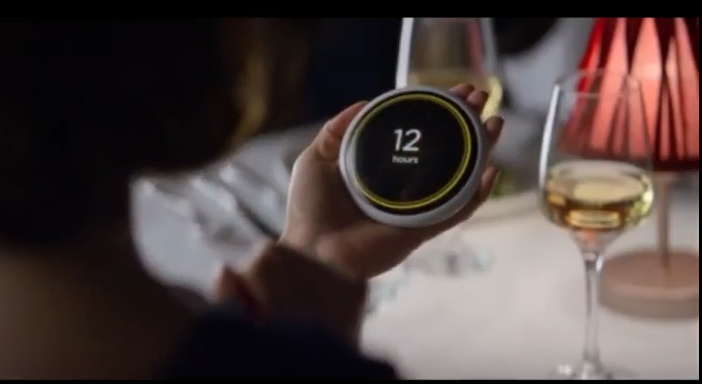
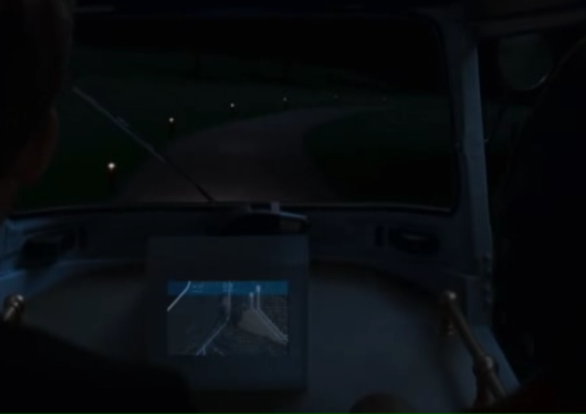
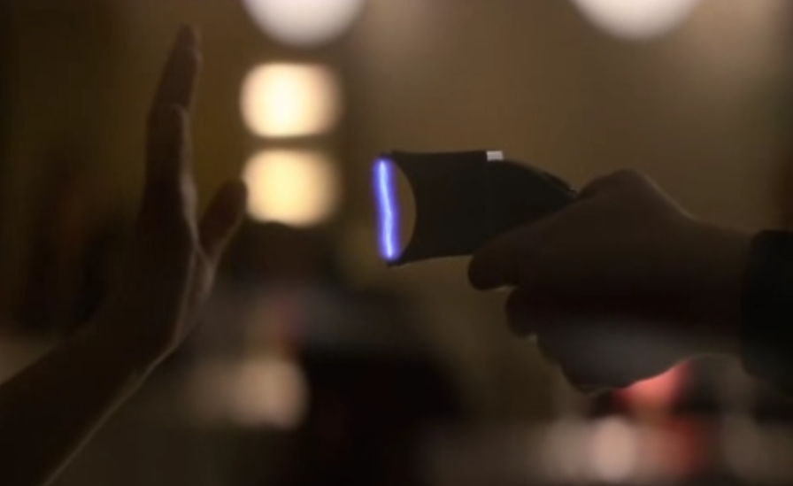

Tiempo de Lectura Estimado: 5 Minutos
Sinopsis
En este capítulo tenemos como protagonistas a un chico y una chica que se van a ver por primera vez en un restaurante. Desde el principio del capítulo vemos que la cita está controlada por Guía un dispositivo táctil capaz de interactuar con el usuario, por medio de la voz y los gestos. Este dispositivo controla el tiempo de convivencia de las parejas, cuando ese tiempo se acaba las reacciones a cada relación se guardan en el sistema, y se asignan nuevas parejas hasta que se tienen suficientes datos como para dar una pareja ideal.
Los protagonistas del capítulo terminan desafiando al sistema de citas, en intentan escapar del entorno en el que están; ahí comprendemos que la historia no es más que una de las mil simulaciones que hace la app de citas para comprobar la compatibilidad de la pareja en la vida real.
Necesidades
El capítulo se desarrolla en una época algo posterior a la nuestra, en este momento la necesidad de buscar pareja, se convirtió en algo que las máquinas podían hacer por nosotros, y ahorrarles a los humanos el tiempo y los cambios emocionales que esto supone, se exponen a continuación las tecnologías que aparecen.
|  |
Dispositivo (Interfaz/tecnología)GuíaPrimera Aparición1:28NecesidadGuía es el un dispositivo táctil con reconocimiento de voz capaz interactuar con los usuarios, se encarga de controlar el tiempo de las citas, y de registrar las impresiones de los componentes de la pareja |
|  |
Dispositivo (Interfaz/tecnología)Coche AutónomoPrimera Aparición4:19NecesidadEste coche se encarga de llevar a la pareja hasta la casa donde van a convivir durante el tiempo que dure su relación, y de recogerlos después, es un vehiculo autoconducido y autoguiado. |
|  |
Dispositivo (Interfaz/tecnología)Pistola EléctricaPrimera Aparición39:24NecesidadLa pistola eléctrica es el elemento que hace que se pare la simulación, no es una pistola eléctrica normal sino que al tocarla los protagonistas paran el tiempo de la simulación. |
Dispositivo (Interfaz/tecnología)Escáner de ManoPrimera Aparición5:19NecesidadOtra tecnología que aparece es el escáner de la palma de la mano que tiene los patrones de las huellas de la pareja para poder abrir la casa, y poner el ambiente a su gusto (encender la chimenea, poner música…) |
Dispositivo (Interfaz/tecnología)SistemaPrimera Aparición48:49NecesidadEl último elemento que aparece en el capítulo es el sistema, hacia el final cuando después de parar el tiempo de simulación la pareja intenta escapar de ese mundo pasando por encima del muro, vemos como ese mundo se va a negro lo que significa que la simulación ha terminado, al final vemos como las 1000 simulaciones que se realizan con la pareja se encuentran el sistema y las que han tenido éxito indican el tanto porciento de afinidad de esa pareja. |
Tecnologías Involucradas
En el capítulo se mezclan tecnologías ya existentes en el momento de la producción(2017) con algunas que todavía no habían sido inventadas, para explicar todas ellas se aporta esta tabla comparativa
| Dispositivo | Tecnologías Disponibles | Tecnologías NO Disponibles |
|---|---|---|
| Guía |
|
|
| Coche Autónomo |
|
|
| Escáner de Mano |
|
|
| Pistola Eléctrica |
|
|
| Sistema |
|
|
Impacto
El dispositivo Guía, ha causado tal sensación en el San Valentín de 2018 se lanzó una aplicación para el móvil que recrea el gadget.
Su funcionamiento es el siguiente, un miembro de la pareja se abre la página coach.dating y esta le devulve un enlace que tiene que enviar a su pareja cuando los dos están en linea tienen 5 segundos para decidir si quieren saber lo que durará su relación si no, ya no podrán saberlo.